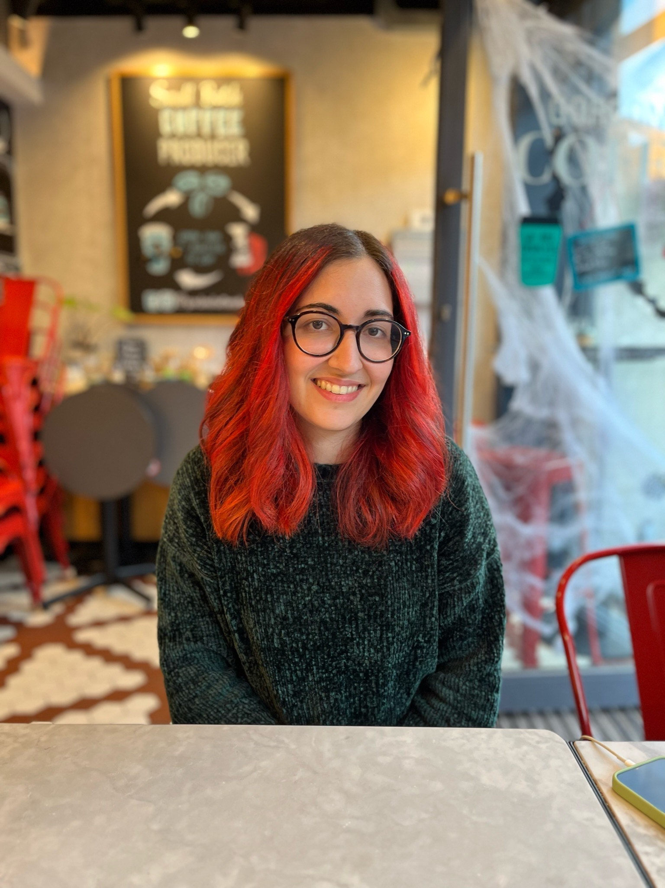

About Me
- Currently completing a PhD at the University of Edinburgh in personalised speech synthesis for atypical voices. I am in my second year.
- Lecturer in NLP and speech technologies at the Universitat Politècnica de Catalunya, at the Postgraduate Course in Deep Learning program (both online and in person).
- Tutor in speech technology courses at the University of Edinburgh (Automatic Speech Recognition, Speech Processing and Speech Synthesis).
- Part of the main committee at Young IT Girls, and in charge of the activities team.
Research Interests
I am interested in speech technologies, natural language processing, acoustics and language acquisition.
In particular, I focus on personalised speech synthesis for atypical voices, TTS evaluation and the intersectionality between gender and speech technologies.
I am very open to collaborations, don't hesitate to reach out!
Publications
- Sanchez, A., Falai, A., Zhang, Z., Angelini, O., Yanagisawa, K. (2022) Unify and Conquer: How Phonetic Feature Representation Affects Polyglot Text-To-Speech (TTS). Proc. Interspeech 2022, 2963-2967, doi: 10.21437/Interspeech.2022-233
- Zhang, Z., Falai, A., Sanchez, A., Angelini, O., Yanagisawa, K. (2022) Mix and Match: An Empirical Study on Training Corpus Composition for Polyglot Text-To-Speech (TTS). Proc. Interspeech 2022, 2353-2357, doi: 10.21437/Interspeech.2022-242
- Deja, K., Sanchez, A., Roth, J., Cotescu, M. (2022) Automatic Evaluation of Speaker Similarity. Proc. Interspeech 2022, 2348-2352, doi: 10.21437/Interspeech.2022-75
- Luque, J., Segura, C., Sanchez, A., Umbert, M., & Galindo, L. A. (2017). The Role of Linguistic and Prosodic Cues on the Prediction of Self-Reported Satisfaction in Contact Centre Phone Calls. In INTERSPEECH (pp. 2346-2350).
- Sanchez, A. (2017). Effects of room acoustics on players' perceptions in audio games (Bachelor's thesis, Universitat Politècnica de Catalunya).
Conferences and Talks
- 2022-2023 - Guest lecture on TTS research at Alexa at the Postgraduate Course in Deep Learning at the Universitat Politecnica de Catalunya.
- 2018-2023 - Various talks about TTS research at Alexa; Universitat Politecnica de Catalunya (Barcelona), University of Edinburgh, Imperial College London, Universidad de Costa Rica.
Other media
Other interests
In my free time, I like reading, playing videogames, playing the violin, going to concerts and going to the gym.
I am also an amateur embroiderer and soon-to-be potter!
I am currently learning Japanese and on my journey for a Shotokan Karate black belt (current belt: green).
Contact
Email: ariadna dot sanchez at ed dot ac dot uk
LinkedIn: Ariadna Sanchez
Twitter/X: @SCAriadna